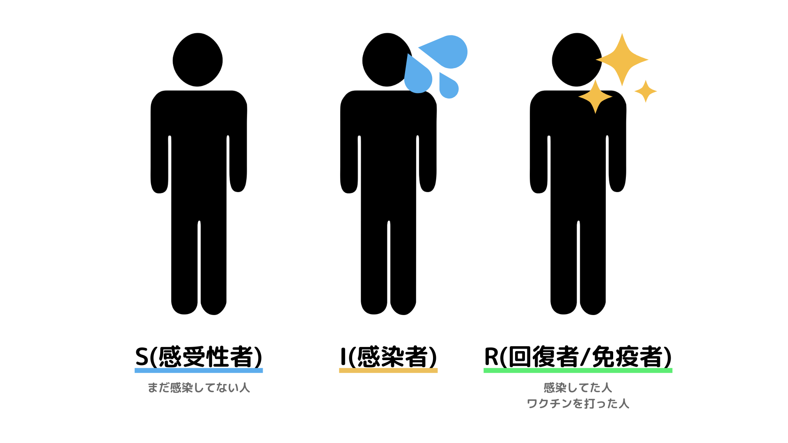

<!DOCTYPE html>
<html lang="ja">
<head>
  <meta charset="UTF-8">
  <meta name="viewport" content="width=device-width, initial-scale=1.0">
  <title>プログラミング 3</title>
  <style>
    body {
      font-family: sans-serif;
      margin: 0;
      padding: 0;
      background: #f9f9f9;
    }
    header {
      background: linear-gradient(to right, #8de0e8, #1e57a3);
      color: white;
      padding: 1rem 2rem;
      text-align: center;
    }
    nav {
      display: flex;
      justify-content: center;
      gap: 1rem;
      background: #e6f2f5;
      padding: 0.5rem 0;
      flex-wrap: wrap;
    }
    nav a {
      text-decoration: none;
      color: #1e57a3;
      font-weight: bold;
    }
    .subnav {
      text-align: center;
      margin-top: 1rem;
    }
    .subnav a {
      margin: 0 0.5rem;
      text-decoration: none;
      color: #444;
    }
    main {
  max-width: 960px;
  margin: 3rem auto;
  padding: 2rem;
  background: white;
  border-radius: 12px;
  box-shadow: 0 4px 12px rgba(0, 0, 0, 0.1);
}
    label {
      display: block;
      margin: 0.5rem 0 0.2rem;
    }
    input {
      padding: 0.4rem;
      font-size: 1rem;
      border: 1px solid #ccc;
      border-radius: 4px;
      width: 100%;
    }
    button {
      margin-top: 1rem;
      padding: 0.6rem 1rem;
      font-size: 1rem;
      color: white;
      background-color: #1e57a3;
      border: none;
      border-radius: 4px;
      cursor: pointer;
    }
    button:hover {
      background-color: #154480;
    }
    pre {
      background: #f4f4f4;
      padding: 1rem;
      overflow-x: auto;
      border-left: 4px solid #1e57a3;
    }
    code {
      font-family: monospace;
    }
    footer {
      text-align: center;
      font-size: 0.9rem;
      color: #666;
      margin: 2rem 0;
    }
  </style>
  <script src="https://cdn.plot.ly/plotly-latest.min.js"></script>
</head>
<body>
  <header>
    <h1>プログラミング 3</h1>
  </header>

  <nav>
    <a href="society1.html">情報社会</a>
    <a href="design1.html">情報デザイン</a>
    <a href="program1.html">プログラミング</a>
    <a href="network1.html">ネットワーク</a>
  </nav>

  <div class="subnav">
    <a href="program1.html">①</a>
    <a href="program2.html">②</a>
    <a href="program3.html">③</a>
  </div>

  
    <div style="text-align: center; margin: 2rem 0;"></div>
    <p>私たちの身のまわりでは、感染症の流行やSNSでの情報の広がり、渋滞や天気の変化など、さまざまな現象が起こっています。こうした出来事を「モデル」として表すことで、しくみをシンプルに理解したり、先のことを予測したりすることができます。
    <br><br>
    今回は「SIRモデル」という数理モデルを使って、感染症がどのように広がっていくのかを調べます。このモデルでは、人の集団を「まだ感染していない人（S）」「感染している人（I）」「回復した人（R）」の3つに分けて、その人数の変化を計算していきます。
    <br><br>
    また、プログラミングを使ってモデルの動きをグラフで見える化し、ワクチンを打ったときと打たないときで感染の広がり方にどんな違いが出るのかを体験してみましょう。</p>

    
<p>S（感受性者）：まだ感染しておらず、今後感染する可能性がある人たち。</p>
<p>I（感染者）：現在感染していて、他の人にうつす可能性がある人。</p>
<p>R（回復者または免疫保持者）：感染から回復した人や、ワクチンを打って免疫を持っている人。</p>
<div style="text-align: center; margin: 2rem 0;"></div>
<p>時間が経つにつれて、Sの人がIになり、Iの人がRになっていきます。このような人数の変化を日ごとに計算することで、感染症がどのように広がっていくのかを予測することができます。</p>
<p>このモデルの良いところは、「全員の行動を細かく追わなくても、集団全体としての動きが予測できる」という点です。例えば、「ワクチンを300人に打ったらどうなる？」「感染率がもっと高かったら？」といった条件を変えてシミュレーションすることで、感染拡大を防ぐ方法を考えるヒントになります。</p>
<p>SIRモデルは、実際の感染症対策や、社会の中のさまざまな仕組みを分析するときにも使われている大切な考え方のひとつです。</p>
<h3>■ パラメータを設定</h3>
    <label>人口（N）:</label>
    <input type="number" id="population" value="1000">
    <label>初期感染者（I₀）:</label>
    <input type="number" id="initialInfected" value="1">
    <label>ワクチン接種数（V）:</label>
    <input type="number" id="vaccinated" value="300">
    <label>感染率（β）:</label>
    <input type="number" id="beta" value="0.3" step="0.01">
    <label>回復率（γ）:</label>
    <input type="number" id="gamma" value="0.1" step="0.01">
    <button onclick="simulate()">シミュレーション開始</button>

    <h3>■ 結果のグラフ</h3>
    <div id="plot" style="width:100%;height:500px;"></div>

    <h3>■ Pythonで書いてみよう</h3>
    <p>以下のPythonコードでも同様のシミュレーションが可能です。サイトで動作を確認した後、自分でも書いてみましょう。</p>
    <pre><code>import numpy as np
import matplotlib.pyplot as plt

N = 1000
I0, R0, V = 1, 0, 300
S0 = N - I0 - R0 - V
beta, gamma = 0.3, 0.1

days = 160
t = np.linspace(0, days, days)

S, I, R = [S0], [I0], [V]

for _ in range(1, days):
    next_S = S[-1] - beta * S[-1] * I[-1] / N
    next_I = I[-1] + beta * S[-1] * I[-1] / N - gamma * I[-1]
    next_R = R[-1] + gamma * I[-1]
    S.append(next_S)
    I.append(next_I)
    R.append(next_R)

plt.plot(t, S, label='S')
plt.plot(t, I, label='I')
plt.plot(t, R, label='R')
plt.xlabel('Days')
plt.ylabel('Number of people')
plt.legend()
plt.title('SIR感染モデル')
plt.show()</code></pre>

    <h3>■ 振り返り</h3>
    <ul>
      <li>ワクチン接種の有無によって、感染者の数やピークの時期はどう変わったか？</li>
      <li>感染率や回復率を変えると、どんな影響が出るか？</li>
      <li>現実世界でもこのようなモデルが使われている例は？</li>
    </ul>
  </main>

  <script>
    function simulate() {
      const N = parseInt(document.getElementById('population').value);
      const I0 = parseInt(document.getElementById('initialInfected').value);
      const V = parseInt(document.getElementById('vaccinated').value);
      const beta = parseFloat(document.getElementById('beta').value);
      const gamma = parseFloat(document.getElementById('gamma').value);

      if (isNaN(N) || isNaN(I0) || isNaN(V) || isNaN(beta) || isNaN(gamma)) {
        alert("すべての数値を正しく入力してください。");
        return;
      }

      let S = N - I0 - V;
      let I = I0;
      let R = V;

      const days = 160;
      let S_data = [], I_data = [], R_data = [], t_data = [];

      for (let t = 0; t <= days; t++) {
        S_data.push(S);
        I_data.push(I);
        R_data.push(R);
        t_data.push(t);

        let dS = -beta * S * I / N;
        let dI = beta * S * I / N - gamma * I;
        let dR = gamma * I;

        S += dS;
        I += dI;
        R += dR;
      }

      Plotly.newPlot('plot', [
        { x: t_data, y: S_data, name: '感受性者（S）', type: 'scatter' },
        { x: t_data, y: I_data, name: '感染者（I）', type: 'scatter' },
        { x: t_data, y: R_data, name: '回復者（R）', type: 'scatter' }
      ], {
        title: '感染モデルシミュレーション結果',
        xaxis: { title: 'Days' },
        yaxis: { title: 'Number of people' },
        plot_bgcolor: '#ffffff',
        paper_bgcolor: '#ffffff'
      });
    }
  </script>

  <footer>
    <a href="index.html">トップページに戻る</a>
  </footer>
</body>
</html>

